This experiment runs an unattended evolution loop on your RTX 5090. Here is how it works step-by-step:
:8188) uses the KREA2 turbo checkpoint (krea2_turbo_fp8_scaled.safetensors) combined with Qwen3-VL-4B clip and Qwen image VAE to render high-resolution 1664×928 frames in 8 steps.:1234 (using the 30B Qwen Vision MoE model, with an 8B model as fallback). The judge scores the image out of 100, identifies its weakest criteria, and automatically rewrites the prompt for the next cycle.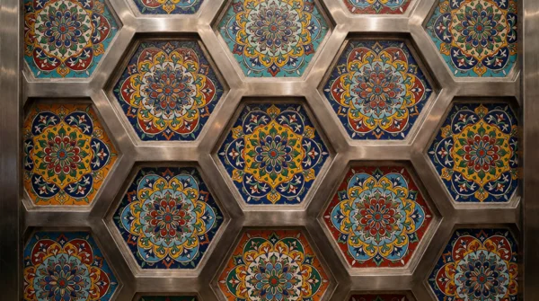
Every generation tracked chronologically. Slots 09–12 indicate ComfyUI GPU timeouts which the runner automatically caught and recovered from.
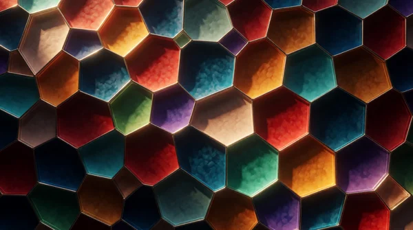
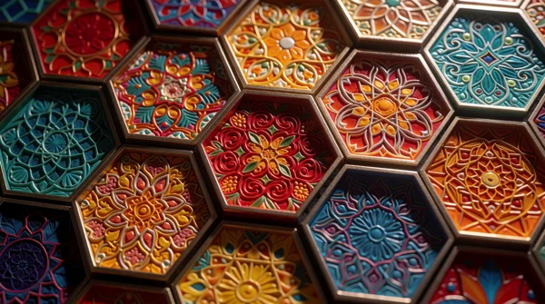
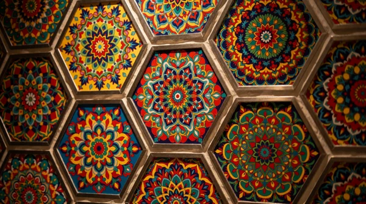
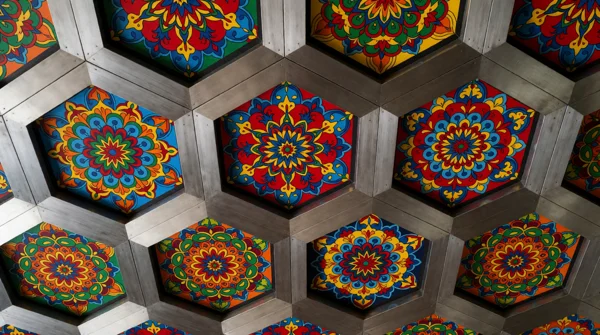
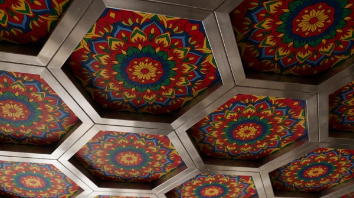
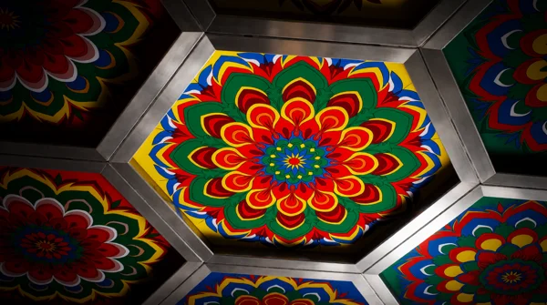
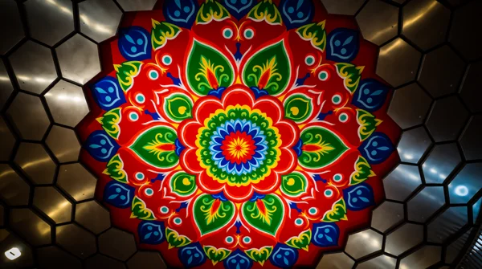
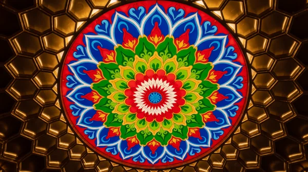
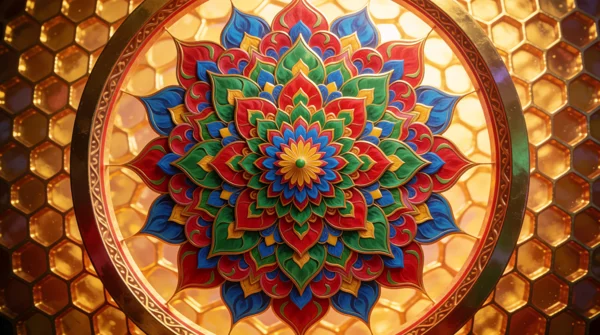
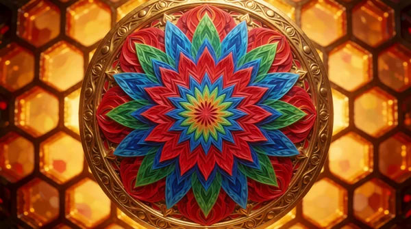
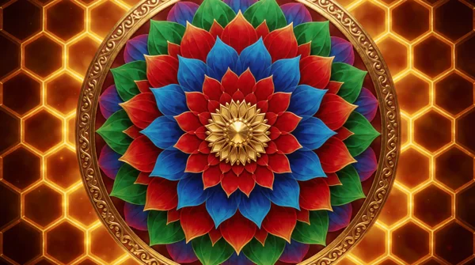
Detailed breakdown for each generated candidate, showing its overall score, pixel metrics (sharpness, colorfulness, brightness), judge critique, and the next mutated prompt with quantified text drift.
[2026-08-17 21:16] Start exp06 unattended evolution (local ComfyUI + LM Studio) [2026-08-17 21:28] cand 0004: score=95 (30B judge timeout -> 8B fallback) [2026-08-17 21:41-21:59] cand 0009-0012: ComfyUI timeouts (auto-recovered) [2026-08-17 22:21] End run. 12 successful candidates, mean score 86.3, best 95.